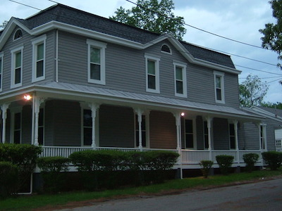

Welcome to New Day Assemby of Christ Online
- Wednesday LABS: 7:30pm - 8:30pm
- Friday Night Outreach Missions: 7:30pm - 9:30pm
- Sunday Morning WOW: 9:00am 12:00pm
Order of Service:
Directions
While our mailing address is on Raleigh Street, it is often best to search for 201 Highview Pl SE Washington, DC as the address when trying to get GPS directions to the church.
History
New Day Assembly of Christ (NDAC) was founded in 1982 by Apostle George Rowe, Sr. and Minister Geraldine Rowe. This church is located at 201 Raleigh St., SE Washington, DC 20032, 202-561-6322. The ministry of NDAC is built on Gods Holy Word and teaches Kingdom principles to whosoever will hear the Word of the Lord. Just as it was prophesied to Apostle & Minister Rowe, this Kingdom ministry.
Covenant
We believe that Jesus Christ is the founder, head and savior of this church. We also contend that the word of God is the seed to and of the Kingdom of Heaven, and when faithfully obeyed will produce true christians in the Church of God.
We also believe that the entire bible was written and inspired by holy men of God under the unction of the Holy Spirit. Accordingly, the Old Testament was a type and shadow of things to come (acting as a school master to lead us unto grace), and the New Testament (written in the blood of Jesus Christ), is our sole rule of faith and practice. We ascertain that the old and new testament scriptures produce faith/belief in God, repentance, confession, and baptism of both water and spirit as the conditions of salvation set forth in Roman 10:9 & 10 and Acts 2:38.
Thus, being led by the Spirit of Almighty God, we exercise our faith and receive the Lord Jesus Christ as our personal savior, accepting the gift of the Holy Ghost, given to us by Him.
We do now in the presence of God, His holy angels, and this assembly, most solemnly and joyfully enter into this church covenant with one another as one Body in Christ.
"Having therefore, brethren, boldness to enter in the holiest by the blood of Jesus, by a new and living way, which He hath consecrated for us, through the veil, that is to say His flesh, and having an high priest over the House of God: let us draw near with a true heart in full assurance of faith, having our hearts sprinkled from an evil conscience, and our bodies washed with pure water. Let us holdfast the profession of our faith without wavering (for He is faithful who promised), and let us consider one another to provoke unto love and to good works, not forsaking the assembling of ourselves together, as the manner of some is; but exhorting one another: and so much the more, as ye see the day approaching."
Now unto Him that is able to keep us from falling, and to present us faultless before the presence of His glory with exceeding joy, to the only wise God our Saviour, be glory, dominion and power, both now and ever. Amen.
Online Tithe Donation and Offering
You can now support the NDAC ministry by giving a freewill offering online or pay your tithing online through paypal. Please be sure to leave a note briefly describing your reason for giving today. It could be as simple as "building fund" or "tithe".
Contact Us
Schedule a fellowship
We would love to come to your temple of worship and to fellowship and praise the lord with you! You can email to schedule a fellowship service by emailing our church clerk at bookings@ndacministries.org
Social Media
Be sure to connect with us on all of our social media outlets!